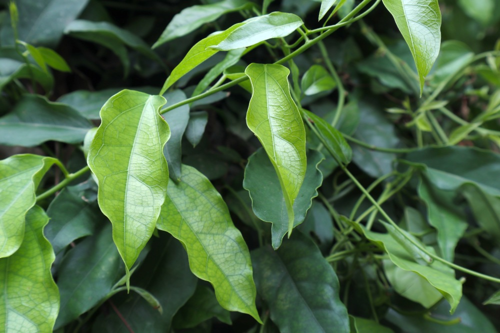

ย่านาง
ย่านางเป็นสมุนไพรรสจืด เป็นยาเย็น มีฤทธิ์ดับพิษร้อน คนจึงนำใบย่านางไปคั้นเป็นน้ำคลอโรฟิลล์ เพื่อเพิ่มความสดชื่น ปรับอุณหภูมิในร่างกาย และยังนำใบย่านางไปช่วยดับพิษไข้ ดับพิษของอาหาร แก้อาการผิดสำแดง แก้พิษเมา แก้เลือดตก แก้กำเดา ลดความร้อนได้ด้วย นอกจากใบแล้ว ส่วนอื่น ๆ ของย่านางก็มีประโยชน์เช่นกัน ทั้ง "ราก" ที่ใช้แก้ไข้พิษ ไข้หัด ไข้ฝีดาษ ไข้กาฬ ไข้ทับระดู "เถาย่านาง" ใช้แก้ไข ลดความร้อนในร่างกาย
ขณะที่ข้อมูลทางเภสัชวิทยาระบุว่า ย่านาง ยังช่วยต้านมาลาเรีย ยับยั้งการหดเกร็งของลำไส้ ต้านฮีสตามีน ส่วน ข้อมูลทางโภชนาการระบุว่า ย่านางมีเบต้าแคโรทีนในปริมาณสูง ซึ่งจะช่วยต่อต้านอนุมูลอิสระ ช่วยชะลอความเสื่อมของเซลล์ในร่างกาย แถมยังอุดมไปด้วยเส้นในอาหาร แคลเซียม เหล็ก ฟอสฟอรัส ย่านางจึงเป็นหนึ่งในจำนวนผักพื้นบ้านที่นักวิจัยแนะนำให้นำมาใช้ในรูปแบบ อาหารเพื่อรักษาโรคมะเร็ง
นำเมล็ดแก่จัดของต้นย่านางมาตากให้แห้งสนิท อาจใช้เวลาประมาณ 1 สัปดาห์ แล้วนำมาหยอดลงดินร่วน โดยใช้นิ้วจิ้มดินให้เป็นหลุมเล็ก ลึกแค่ข้อนิ้วเดียวก็พอ เพราะหากลึกมากไปเมล็ดจะเน่าตาย เมื่อมียอดงอกขึ้นมาแล้วให้จับแยกไปลงปลูกในจุดที่ต้องการ แล้วรอให้เถายาวประมาณหนึ่งก่อนค่อยทำร้านให้เถานั้นเลื้อยไป หรือจะใช้วิธีปลูกร่วมกับไม้ใหญ่ชนิดอื่น แล้วให้ย่านางเกาะเกี่ยวไปตามลำต้นของไม้นั้นก็ได้เหมือนกัน
ต้องการแสงปานกลางถึงมาก สามารถเติบโตได้ดีทั้งพื้นที่แดดรำไรและแดดจัดตลอดทั้งวัน ควรรดน้ำอย่างสม่ำเสมอเพื่อให้ดินมีความชุ่มชื้นมากพอ อย่างน้อยวันละ 1-2 ครั้ง ดินร่วนซุยที่อุ้มน้ำได้ดีจะเหมาะกับการเจริญเติบโตมากที่สุด
ต้น รสจืดขม ถอนพิษผิดสำแดง รักษาพิษไข้ แก้ไข้ตัวร้อน แก้ไข้กลับ และรักษาโรคปวดข้อ
ราก รสจืดขม ใช้แก้ไข้ทุกชนิด ขับพิษต่างๆ แก้ท้องผูก บำรุงหัวใจ บำรุงธาตุ แก้โรคหัวใจบวม แก้กำเดาไหล และแก้ลม
ใบ รสจืดขม ใช้ถอนพิษไข้ แก้ไข้ แก้เลือดตก แก้กำเดา แก้ผดผื่นคัน แก้อาการท้องอืดท้องเฟ้อ แก้ลม แก้ปวดหัวตัวร้อน อีสุกอีใส หัด และใช้เป็นยากวาดคอ
เถา แก้ไข้ ลดความร้อนในร่างกาย ต้านโรคมาลาเรีย และยับยั้งการหดเกร็งของลำไส้
1 เมื่อได้ใบย่านางมาผึ่งลมไม่ให้เปียก ถ้าเปียกใบจะเน่า
2 เด็ดเป็นใบ ๆ แยก กลุ่มใบดีใบเสีย
3 แยกบรรจุใส่ถุงพลาสติก เรียงเป็นใบ ๆ ใบจะได้ไม่ช้ำ ถ้าช้ำจะเสียง่าย
4 ห่อด้วยกระดาษ 2-3 ชั้น
5 ห่อให้เรียบร้อย และ
6 เก็บใส่ตู้เย็นในกล่องแช่ผัก